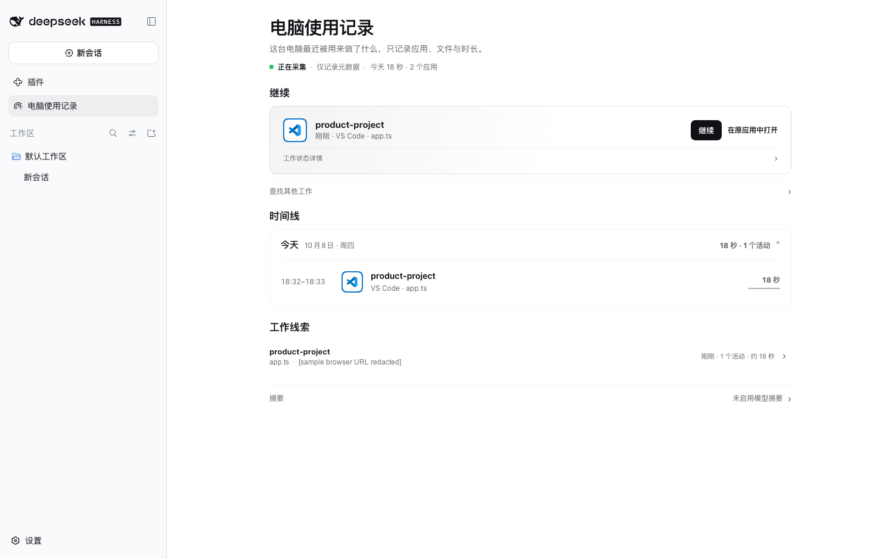
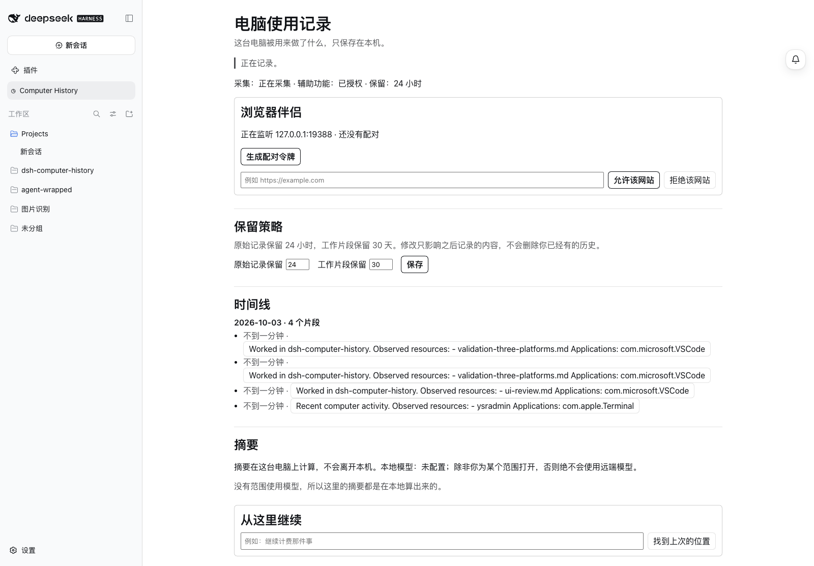

Computer History
让工作上下文留在本地
记录最必要的应用、资源和时间元数据，让 Agent 找到之前正在做的事，而不必读取屏幕和文档正文。
- 平台安装验证
- 3
- 本地历史存储
- SQLite
- 已发布版本
- v1.1.0

为什么做
对话记录只知道聊天发生了什么，却常常不知道人刚才在编辑器、终端或浏览器里做了什么。切换会话后，重新交代上下文会占用时间。
怎么实现
- 只收集允许的元数据
首次默认关闭；用户按应用授权采集。记录应用、资源、时间等有限信号，而非屏幕像素或按键。
- 在本地组合工作片段
将经隐私策略检查的观察记录保存到本地 SQLite，按时间和资源形成工作片段。
- 可控地继续工作
从记录中选取有限、可审查的线索提供给新会话；Continue 不会自动重新打开文件或应用。
已经做到哪一步

仓库界面示例：记录保留、工作时间线与继续工作入口。
GitHub Releases 已发布 v1.1.0。项目文档记录了同一安装包在 Windows、macOS、Linux 的打包安装测试，也列出了平台原生采集的权限要求及覆盖限制。
查看跨平台验证记录隐私与限制
主动授权才会开始记录
默认不收集，应用范围采取包含列表；项目设计不保存截图、键盘输入、剪贴板和文件正文。不过元数据仍可能包含敏感线索，应审慎授权与保留。
不同系统上的原生可访问性采集受到权限与桌面环境限制。发布安装包不意味着所有第三方 DSH 版本都已验证。